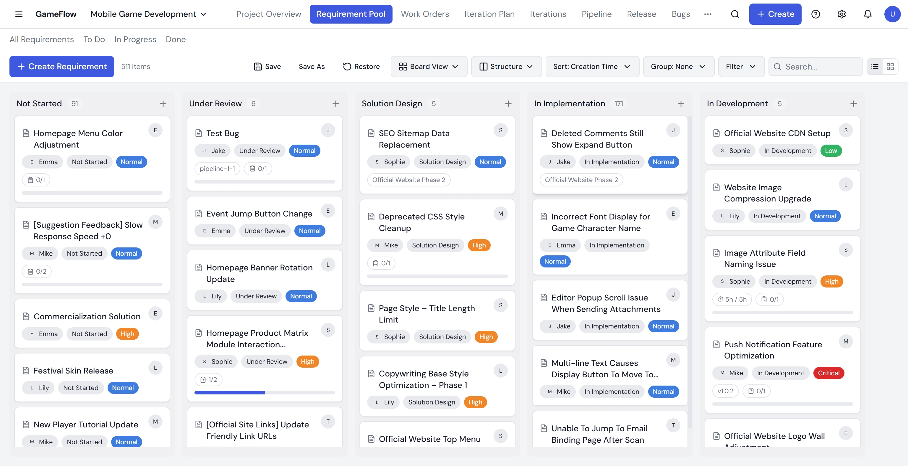
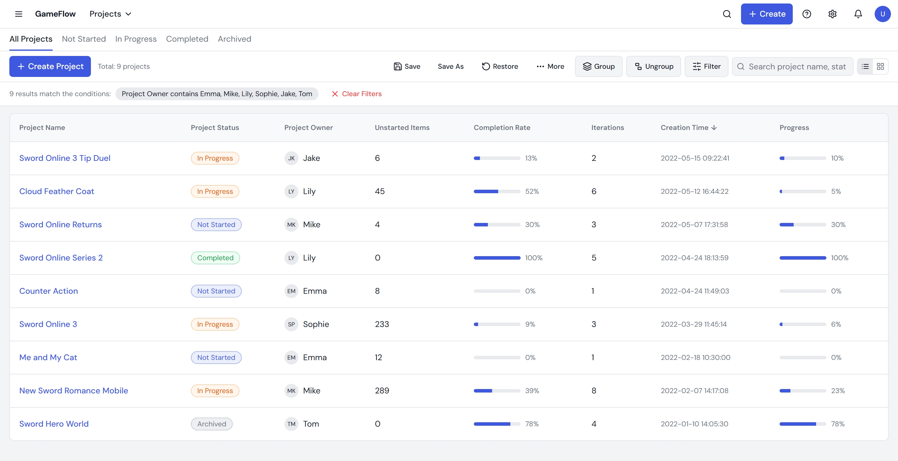
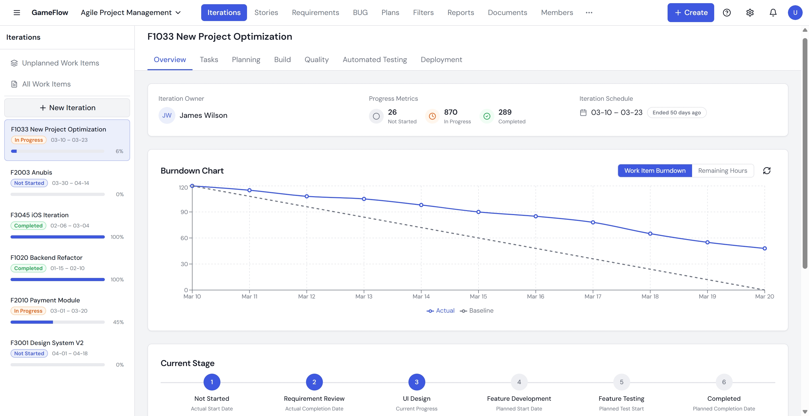

A Project Management Platform for Game Development
Seasun Games runs 10+ live game titles with a team of over 1,000 people. Game development isn't like building a SaaS product — requirements shift constantly, production cycles run months long, and a single title involves artists, engineers, QA, and operations all working in parallel.
But the tools hadn't kept up with that complexity:
Tracked sprints in Excel
Requirement changes traveled through group chats
Had no view into what was coming until it landed in their queue
GameFlow was built to replace that patchwork with one production platform every role could actually use.
Before designing anything, I spent three weeks embedded across five departments, sitting in on daily stand-ups, and interviewing 15 stakeholders — producers, artists, QA leads, planners, devops. The goal wasn't to collect feature requests. It was to understand how a 1,000-person studio actually coordinated work day to day, and where that coordination broke down.
A planner updates a character skill during a balance pass. The artist is still working from the old spec. QA writes a bug report for something that's actually working as intended, just under a different requirement now. The problem wasn't that changes happened — that's normal in game dev. The problem was that changes were invisible: tracked in personal spreadsheets, communicated through group chats, easy to miss.
The art team tracked work in their own sheet. Engineering had a different one. QA had another. When the art team pushed a deadline, engineering found out late, or not at all. A producer who wanted a cross-team status update had to message five group leads individually and piece together the picture themselves.
With production cycles running 3 to 12 months, there was no reliable way to see whether a release was on track until it was already behind. By the time someone noticed a bottleneck, it had already cascaded.
A requirement comes in from player feedback, gets prioritized by the producer, assigned to a planner, handed off to engineering, then to QA. At any point, it might change. The old process had no way to track what changed, when, or by whom.
I designed a unified Requirement Pool where all incoming requests are collected and tagged by source and category. Each requirement has customizable workflow states, and when it moves to a new stage, the responsible person updates automatically and gets notified. A full change log records every modification, so when something changes midstream, anyone can trace back to what happened.
We considered a simpler linear tracker, but game production requirements don't follow a straight line — they branch, get deprioritized, and resurface. The tagging and filtering system was designed so that different roles could look at the same pool but see what mattered to them.

The Art Center serves multiple game titles simultaneously. A lead artist needs to know what's on their team's plate across all projects. A producer needs to see how engineering, art, and QA are tracking against the same milestone, without messaging five people.
I designed a unified production pipeline view that connects all roles into one workflow: requirement → development → testing → release. The project structure uses custom attribute fields (e.g., "Game Title," "Platform") so managers can filter by department, game, or resource allocation. Power users can save preset filter views and toggle between them with one click, instead of reconfiguring every time.
The temptation was to build separate dashboards for each department. But the core problem was fragmentation — adding more views would have made it worse. The design bet was: one shared pipeline, with flexible filtering, so everyone sees the same source of truth through their own lens.

A version is due in six weeks. The producer sees tasks are being completed, but can't tell if the remaining work is on pace. Two weeks before release, three critical tasks surface as blocked, and it's too late to adjust scope.
I designed an iteration planning framework aligned with game production phases: Prototype → Alpha → Beta → Live Ops. Each phase has defined milestones and estimated effort. Interactive Gantt charts show cross-team timelines, and burndown charts give real-time progress visibility. Early warning indicators flag deadline risks before they cascade.
The burndown chart y-axis can toggle between task count and effort hours. This sounds small, but it mattered: a PM looks at task count to gauge "how many things are left." A tech lead looks at effort hours to gauge "how many person-days we still need." A 2-week task and a 2-hour task shouldn't carry equal visual weight. Supporting both views in one chart meant both roles could use the same tool without talking past each other.

Game teams have diverse workflows. Building customizable components (states, fields, views) rather than rigid templates was key to adoption across different project types and team sizes. The moment we hard-coded a workflow, someone needed it to work differently.
As an intern on the team, I couldn't rely on authority. Every design decision had to be grounded in research — a quote from an interview, a pattern from observation, a data point from testing. That discipline shaped how I present work to this day.
Three weeks of groundwork changed how I approach every project since. Before GameFlow, I would have started wireframes in week one. Now, my first move on any project is mapping the existing workflow end to end before touching any screen. That habit saves me the most rework.